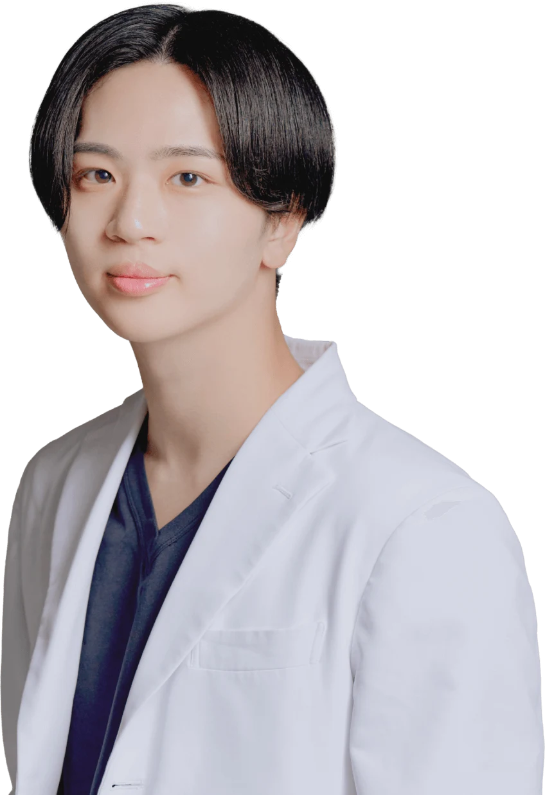
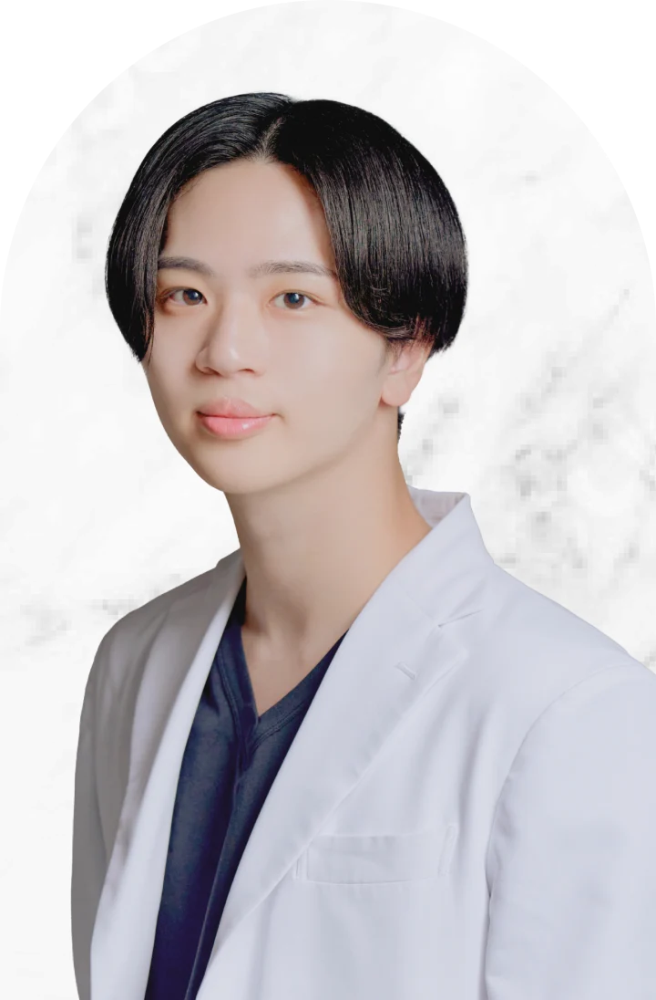

CASE 01
クマ取り＋涙袋形成
切らない目の下のたるみ取り＋脂肪注入（コンデンス・ナノ）＋涙袋形成
腫れ、内出血、しこり、左右差などのリスクがあります。経過には個人差があります。

#クマ取り名医 松田 裕太
脱脂・裏ハムラ・脂肪注入を、原因に合わせて使い分けます。
膨らみ、凹み、影、皮膚の薄さ、涙袋とのバランス。原因が違えば、必要な治療も変わります。
切らない目の下のたるみ取り＋脂肪注入（コンデンス・ナノ）＋涙袋形成
腫れ、内出血、しこり、左右差などのリスクがあります。経過には個人差があります。

裏ハムラ＋ナノファット。膨らみと凹みを同時に整え、目元から頬へ自然につながるラインに。
腫れ、内出血、拘縮、凹凸、左右差などのリスクがあります。経過には個人差があります。
ここからは、松田医師が何を見て、なぜ複数の術式を使い分けるのかを順番にご説明します。
医師 → 診断の考え方 → 治療方法 → 自分の適応 → 費用、の順にご覧いただけます。

クマ治療で大切なのは、術式を先に決めることではありません。膨らみ、凹み、皮膚の薄さ、色味、頬のボリュームまで見たうえで、「何を取るか」「何を残すか」「どこを補うか」を設計します。
目元は数ミリの違いで印象が変わる場所。だから、一つの術式に全員を当てはめません。
クマにはさまざまな種類があり、原因によって必要な治療は変わります。脱脂・脂肪注入・裏ハムラ・切開ハムラの総執刀数は2,000件以上。大切なのはどの治療をするかではなく、どの治療が必要なのかを見極める診断力です。
裏ハムラ法で最も大切にしているのは、涙袋を強調させる技術。眼輪筋周囲の剥離、脂肪の移動量、必要な際の脂肪の減量が、のっぺりさせないための鍵になります。目元に強弱が出ることで、涙袋がより際立ちます。
セプタルリセットという術式で再発を予防します。裏ハムラ法で移動した眼窩脂肪を眼窩隔膜(＋CPF前葉)で覆うように固定する方法で、笑った時に目の下が膨らむ状態を防ぐ利点もあります。
クマ治療と同時に、中顔面のS字ライン「OGカーブ」を整えられます(通称：ミッドフェイスリフト)。前頬の脂肪を裏側から持ち上げて自然なカーブをつくり、下垂が強い場合はバーティカルリフトを併用することもあります。
二重全切開、眼瞼下垂、二重埋没、目頭切開、タレ目形成、目尻切開、人工真皮・切らない・脂肪注入による涙袋形成まで幅広く対応。選択肢があるからこそ、一人ひとりに合わせたオーダーメイドの治療ができます。
脂肪注入で不安に思われやすいのが、しこりの合併症です。コンデンスリッチとナノファットを層ごとに使い分けることで、脂肪の定着率を高めながら、しこりのリスクを最小限に抑えます。
カウンセリング時間を長めに設定し、必要な施術と必要のない施術を分けて分かりやすくご説明します。気になることや不安があれば術後も無料で診察。施術をして終わりではなく、経過まで責任を持って担当します。
「できるだけ切りたくない」というご希望には、切開なしで最大限の改善を目指せる治療をご提案します。他院で切開が必要と言われた方でも、状態によっては切らずに改善できることがあります。ただし切開の方が良い仕上がりになる場合に、無理に切らない治療をすすめることはありません。
クマ取りは「脱脂をするか、しないか」だけではありません。原因に合わせて、複数の方法から選びます。
下のどれかに当てはまっても、治療方法を自分で決める必要はありません。
術式を決める前に、目元の状態から一緒に整理します。
料金も、治療の一部です。何にいくらかかるのかを事前に分かりやすくご説明します。
※表示価格は税込です。モニター価格の適用条件、麻酔費用、その他の費用については、カウンセリング時にご説明いたします。
適応・治療方法・料金まで、カウンセリング時に整理してご説明します。
美容医療を、施術を売る場所ではなく、悩みに向き合い、必要な医療を選ぶ場所へ。技術・説明・安心・アフターフォローまで含めて、一人ひとりにとっての最良を目指します。